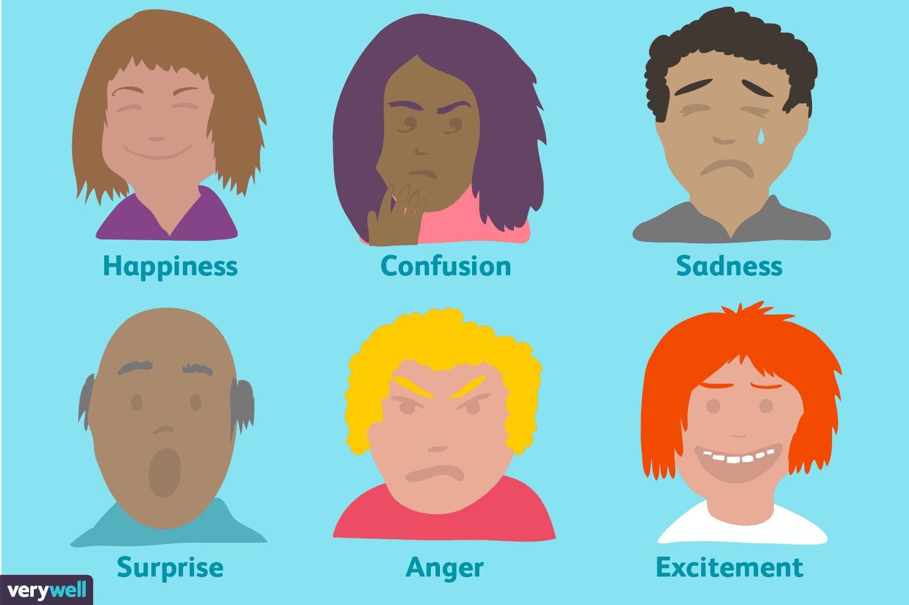
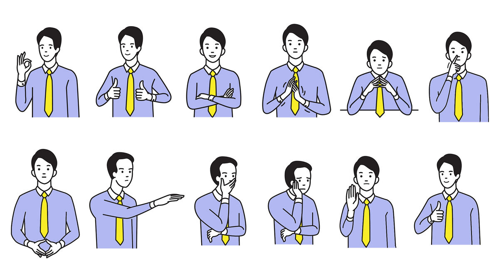

Here are the basics of body language. That means what is body language?
Body language is the largest part of nonverbal communication, and it covers everything from eye contact to hand gestures.

Ok, now that we understood that, what are some examples of negative and positive body language?
Positive Body Language: Open hands, good posture, regular eye contact, nodding, tilting your head, and most importantly smiling.
Negative Body Language: Crossing your arms, tapping your fingers or toes, fidgeting, crossing your legs, avoiding eye contact, and frowning.

Where is body language used?
A short answer would be everywhere, but to be specific, it is used in offices, police stations, homes, and schools.
How/why is body language used?
Body language is used to decipher the emotions within a person, and/or create relationships. For example, in a home, parents have the responsibility of using body language to create lasting morals within their children and teach them how to do certain things. And, in police stations, during interrogations, law enforcement officers use body language to steer the line of questioning.
The most important fact is that different cultures use body language differently.
Now that you have a basic idea of body language, we can answer the research question.